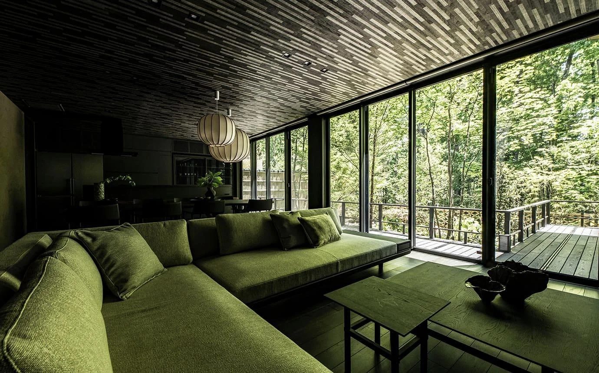

01 / STUDIO EXPRESSIONFOREST × CORAL
Beyond
the frame.
Deep forest architecture. Unapologetic coral. A controlled transition from quiet precision to expressive design.
Explore direction ↗Three independent, fully scrollable studies for the S.A.C. Official Website. All three keep the same storytelling framework while shifting the visual temperament — from expressive to architectural to refined neutral studio.
Compare how each direction handles its first frame, scroll-paced transitions, material and colour study, company information and Product Studio handoff. These are design prototypes, not authorised uses of the reference photographs for a public launch.